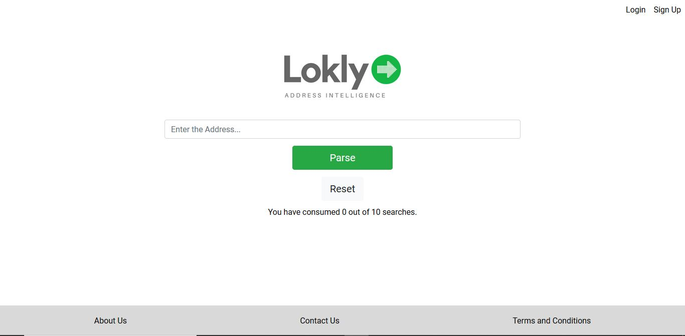

What is it about?
Addresses often provide a significant amount of intelligence about the buying and spending habits of a consumer. In most cases this intelligence cannot be determined from the address as most of the addresses are free flowing text and are not easily parsed. Faced with these challenges we have created an address parser exclusively for Indian addresses. Lokly the Indian address parser helps you parse an address contained in a free flowing string. Divide a single address (as string) into separate component parts : house number, street type (bd, street, ..), street name, unit (apt, batiment, ...), zipcode, state, country, city etc. Soon we would be adding intelligence around the neighborhoods to help you determine the economic value of the addresses.How it works?
Just enter the address and the request will be passed as an API to the backend where the predictions are made. The results are then returned back to the front-end. There is a option to careate an account to have access to more number of searches.
